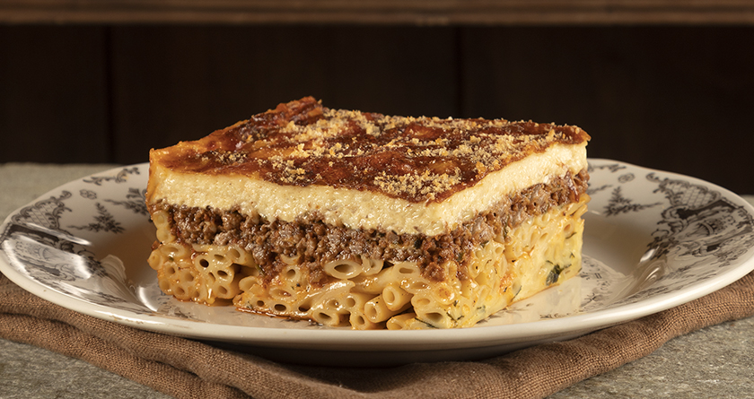

Pastitsio
Home

Description
One of the most common and delicious greek recipes
Ingridients
- Milk
- Eggs
- Pasta
- Minced Beef
- Cheese
Steps
- Prepare the minced beef,Cook for 30 minutes
- Prepare the cream
- Boil the pasta
- Add layers of pasta and beef. Two layes of each
- Add the cream on top along woth grated cheese and bake